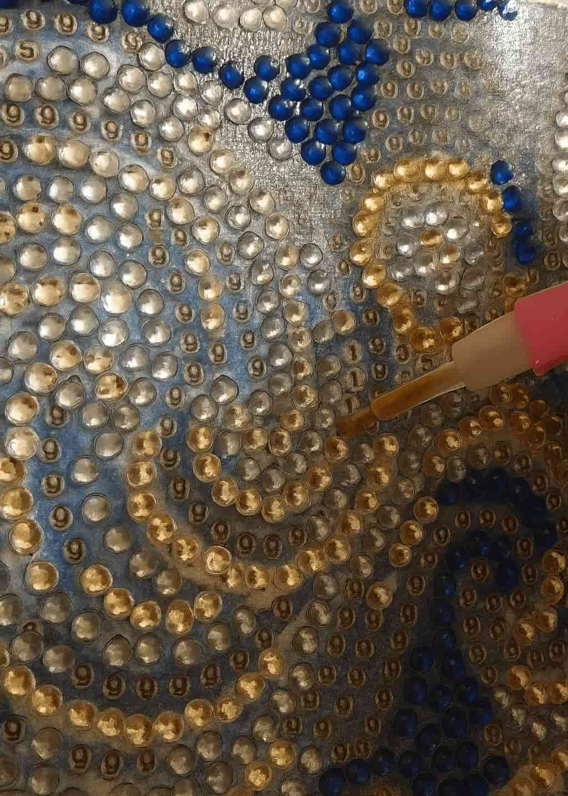
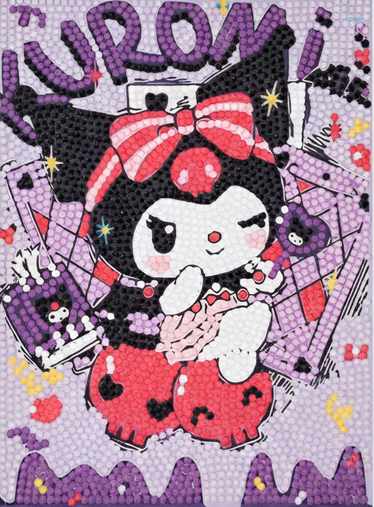
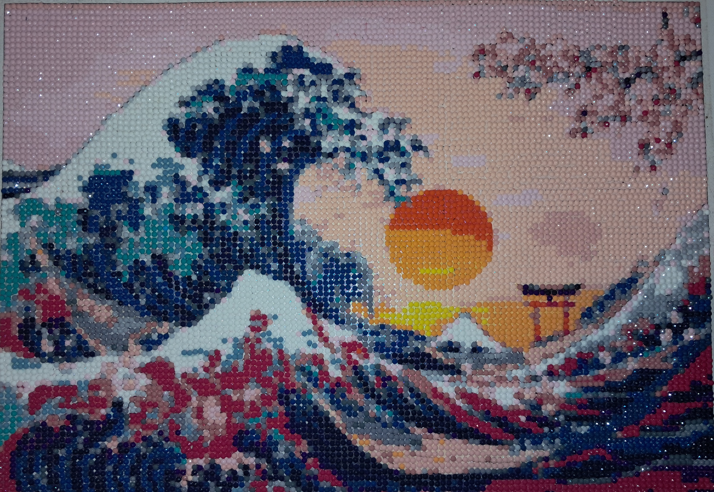
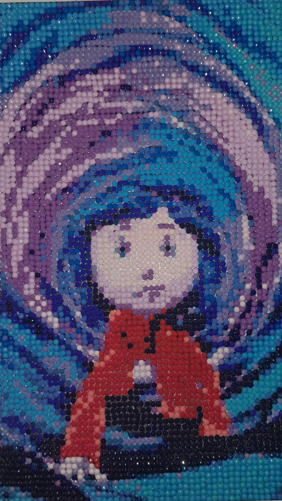
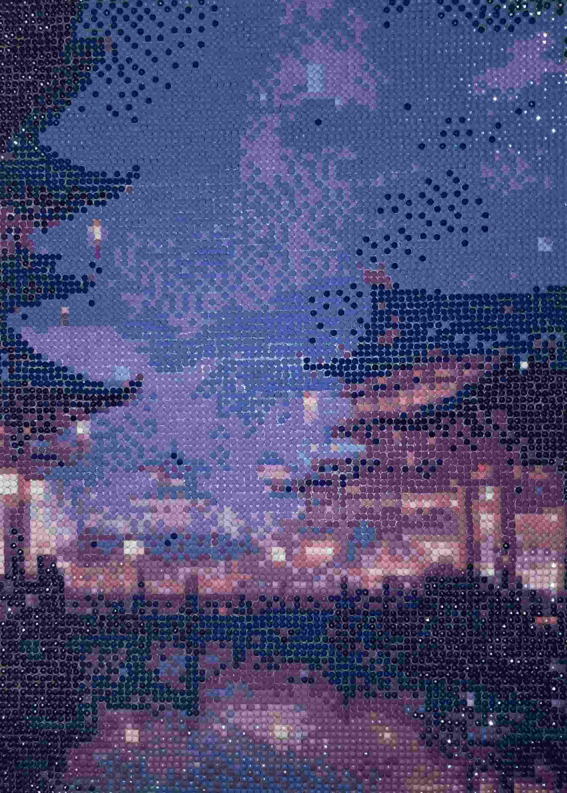

This website is a personal exploration of the hobbies that have become my sanctuary during stressful times. In our fast-paced world, finding moments of calm can feel impossible[...]
About This Project
My Stress-Relief Hobbies
💎 Diamond Painting
Diamond painting has become my evening meditation. There's something incredibly soothing about the repetitive motion of picking up tiny resin diamonds with a special pen and placing them onto[...]

What I love most about diamond painting is how it demands just enough attention to keep my anxious thoughts at bay, but not so much that it becomes mentally taxing. My hands move in a rhythm�[...]
I usually work on larger canvases over the course of several weeks. There's no rush, no deadline. Some nights I place a hundred diamonds, other nights a thousand. The project slowly reveals i[...]

The hobby also satisfies my need for organization and completion. Each color has its own numbered packet, and I love the process of sorting and storing them. Finishing a section feels like a [...]
✨ Bead Curtain Art
Creating bead curtains is a hobby I stumbled into almost by accident, but it has become one of my favorite mindless creative outlets. The process involves stringing colorful beads onto thread[...]

What makes this hobby particularly calming is the repetitive nature of stringing beads combined with the gentle creative decisions about color placement. I don't follow strict patterns—inst[...]
The tactile experience is wonderful. Each bead slides smoothly onto the string with a soft clicking sound. I can feel the weight of the strand growing in my hands as I work. There's something[...]
Space for completed bead curtains
When hung in a doorway or window, bead curtains transform a space. They add color, texture, and movement. When a breeze passes through or someone walks by, they sway and chime gently. The way[...]
🧶 Crochet Canvas Art
Crochet canvas art combines traditional crochet techniques with visual art. Instead of making scarves or blankets, I create textured wall hangings and decorative pieces by crocheting directly[...]
Space for crochet canvas images
The beauty of this hobby lies in its forgiving nature. Unlike traditional art forms where mistakes can be difficult to fix, crochet is endlessly adjustable. If I don't like how something look[...]
The rhythm of crochet is deeply meditative. My hands know the motions so well that I rarely need to look at what I'm doing. Loop the yarn, pull through, repeat. The hook becomes an extension [...]
Space for crochet art pieces
I especially love experimenting with different textures and stitches. Some pieces are smooth and tight, others loose and flowing. I play with color gradients, mixing yarns to create ombre eff[...]
🎨 Paint-By-Numbers
Paint-by-numbers might seem childish to some, but for me, it's the perfect stress-free way to engage with painting without the pressure of creating something from scratch. Each kit comes with[...]
Space for paint-by-numbers in progress
What I love about this hobby is how it removes all creative decision-making. I don't have to think about composition, color theory, or technique. The artwork is already designed—I'm simply [...]
The process is wonderfully methodical. I typically work through the painting by color, completing all sections of one number before moving to the next. This creates an interesting transformat[...]
Space for completed paintings
There's something deeply satisfying about the precision required. Staying within the lines, making sure the coverage is even, blending edges where colors meet—these small technical challeng[...]
How These Hobbies Help With Stress
These hobbies share a common thread: they're all repetitive, meditative, and require just enough focus to quiet an anxious mind without demanding intense concentration. When I[...]
"Creativity is not about producing something for others to see. Sometimes it's just about giving your mind permission to rest while your hands remember how to play."
Gallery




Image 5
Image 6
Image 7
Image 8
Final Thoughts
In a world that constantly demands our attention, productivity, and perfection, these mindless hobbies have become my gentle rebellion. They remind me that not everything needs[...] }; async function onConfigChange(config) { document.getElementById('site-title-nav').textContent = config.site_title || defaultConfig.site_title; document.getElementById('site-title').textContent = config.site_title || defaultConfig.site_title; document.getElementById('welcome-text').textContent = config.welcome_text || defaultConfig.welcome_text; document.getElementById('about-title').textContent = config.about_title || defaultConfig.about_title; document.getElementById('about-text').textContent = config.about_text || defaultConfig.about_text; document.getElementById('hobbies-title').textContent = config.hobbies_title || defaultConfig.hobbies_title; document.getElementById('stress-title').textContent = config.stress_title || defaultConfig.stress_title; document.getElementById('stress-text').textContent = config.stress_text || defaultConfig.stress_text; document.getElementById('gallery-title').textContent = config.gallery_title || defaultConfig.gallery_title; document.getElementById('final-title').textContent = config.final_title || defaultConfig.final_title; document.getElementById('final-text').textContent = config.final_text || defaultConfig.final_text; } function mapToCapabilities(config) { return { recolorables: [], borderables: [], fontEditable: undefined, fontSizeable: undefined }; } function mapToEditPanelValues(config) { return new Map([ ["site_title", config.site_title || defaultConfig.site_title], ["welcome_text", config.welcome_text || defaultConfig.welcome_text], ["about_title", config.about_title || defaultConfig.about_title], ["about_text", config.about_text || defaultConfig.about_text], ["hobbies_title", config.hobbies_title || defaultConfig.hobbies_title], ["stress_title", config.stress_title || defaultConfig.stress_title], ["stress_text", config.stress_text || defaultConfig.stress_text], ["gallery_title", config.gallery_title || defaultConfig.gallery_title], ["final_title", config.final_title || defaultConfig.final_title], ["final_text", config.final_text || defaultConfig.final_text] ]); } if (window.elementSdk) { window.elementSdk.init({ defaultConfig, onConfigChange, mapToCapabilities, mapToEditPanelValues }); } // Smooth scrolling for navigation document.querySelectorAll('a[href^="#"]').forEach(anchor => { anchor.addEventListener('click', function (e) { e.preventDefault(); const target = document.querySelector(this.getAttribute('href')); if (target) { target.scrollIntoView({ behavior: 'smooth', block: 'start' }); } }); });